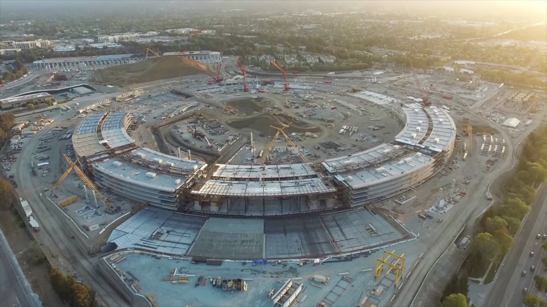
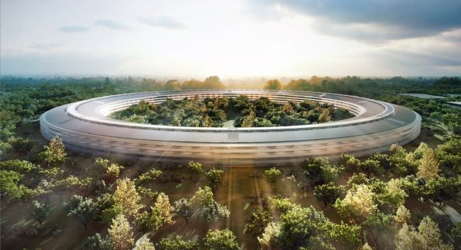

Sinds april 2017 is het hoofdkantoor gevestigd in Apple Park.Het hoofdkantoor lijkt op een spaceship en is ontworpen door de Britse architect Norman Foster, in samenwerking met Steve Jobs.
Het is een van werelds meest energie-efficiente gebouwen,op het dak zijn zonnepanelen geinstalleerd die zorgen voor driekwart van de dagelijkse energievraag.Rondom het park zijn 9.000 bomen gepland die dagelijks water krijgen via een watersysteem dat gebruik maakt van gerecycled water en ventilatiesystemen zijn zo afgestemd dat het hoofdkantoor driekwart van het jaar zonder extra airco of verwarming kan.
Het gebouw heeft 4 verdiepingen en is zo'n 260.00 m2 groot.Er werken zo"n 12.000 mensen. Op het terrein is ook gevestigd en ondergronds auditorium, het 'Steve Jobs Theater',een fitnesscentrum van ruim 9.000 m2,bezoekerscentrum met observatiedek en aparte gebouwen voor onderzoek en ontwikkeling.Omdat er geen verbindingen zijn met het openbaar vervoer, zijn er 11.000 onder- en bovengrondse parkeerplaatsen. En er is zo'n 3 km aan wandel en hardlooproutes